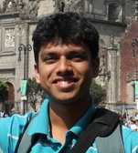

Sushil Subramanian
|  | Sushil Subramanian
() Research Scientist |
I received my PhD from the Department of Electrical Engineering at University of Southern California, under the advise of Prof. Hossein Hashemi. Currently, I work as a research scientist at Intel Labs, the research division of Intel Corporation.
I analyze and design integrated communication systems. Of particular interest to me are topics in quantization and synchronization. Application areas that I have worked on are fast hopping frequency synthesizers and interference tolerant receivers. Currently, I primarily work on cryogenic control for quantum computing.
From 2005 to 2009, I did undergraduate studies in the Department of Electronics and Electrical Communication Engineering at Indian Institute of Technology, Kharagpur, India. I am from Bengaluru, India.
Publications
For a list that include patents and abstracts, see my Google Scholar profile.
Journal Papers
A Fully Integrated Cryo-CMOS SoC for State Manipulation, Readout, and High-Speed Gate Pulsing of Spin Qubits [pdf]
J Park, S Subramanian, L Lampert, T Mladenov, I Klotchkov, DJ Kurian, E Juarez-Hernandez, BP Esparza, SR Kale, A Beevi KT, SP Premaratne, TF Watson, S Suzuki, M Rahman, JB Timbadiya, S Soni, S Pellerano
IEEE Journal of Solid-State Circuits, November 2021
CMOS-Based Cryogenic Control of Silicon Quantum Circuits [pdf]
X Xue, B Patra, JPG van Dijk, N Samkharadze, S Subramanian, A Corna, C Jeon, F Sheikh, E Juarez-Hernandez, BP Esparza, H Rampurawala, B Carlton, S Ravikumar, C Nieva, S Kim, H-J Lee, A Sammak, G Scappucci, M Veldhorst, F Sebastiano, M Babaie, S Pellerano, E Charbon, LMK Vandersypen
Nature, May 2021
A Scalable Cryo-CMOS Controller for the Wideband Frequency-Multiplexed Control of Spin-Qubits and Transmons [pdf]
JPG van Dijk, B Patra, S Subramanian, X Xue, N Samkharadze, A Corna, C Jeon, F Sheikh, E Juarez-Hernandez, BP Esparza, H Rampurawala, B Carlton, S Ravikumar, C Nieva, S Kim, H-J Lee, A Sammak, G Scappucci, M Veldhorst, LMK Vandersypen, E Charbon, S Pellerano, M Babaie, F Sebastiano
IEEE Journal of Solid-State Circuits, September 2020
Reconfigurable Quantization of Oversampled Signals under Discrete-Time Filtering [pdf]
S Subramanian, H Hashemi
IEEE Transactions on Circuits and Systems I: Regular Papers, November 2014
Conference Proceedings
Cryogenic CMOS for Qubit Control and Readout
S Pellerano, S Subramanian, J-S Park, B Patra, T Mladenov, X Xue, LMK Vandersypen, M Babaie, E Charbon, F Sebastiano
IEEE Custom Integrated Circuits Conference, April 2022 (Best Paper Award)
A Fully-Integrated Cryo-CMOS SoC for Qubit Control in Quantum Computers Capable of State Manipulation, Readout and High-Speed Pulsing of Spin Qubits in 22nm FinFET Technology [pdf]
J-S Park, S Subramanian, L Lampert, T Mladenov, I Klotchkov, DJ Kurian, E Juarez-Hernandez, B Perez-Esparza, SR Kale, A Beevi KT, S Premaratne, T Watson, S Suzuki, M Rahman, JB Timbadiya, S Soni, S Pellerano
IEEE International Solid-State Circuits Conference, February 2021
A Scalable Cryo-CMOS 2-to-20GHz Digitally-Intensive Controller for 4
 32 Frequency Multiplexed Spin Qubits/Transmons in 22-nm FINFET Technology for Quantum Computers [pdf]
32 Frequency Multiplexed Spin Qubits/Transmons in 22-nm FINFET Technology for Quantum Computers [pdf]
B Patra, JPG van Dijk, S Subramanian, A Corna, X Xue, C Jeon, F Sheikh, E Juarez-Hernandez, BP Esparza, H Rampurawala, B Carlton, N Samkharadze, S Ravikumar, C Nieva, S Kim, H-J Lee, A Sammak, G Scappucci, M Veldhorst, LMK Vandersypen, M Babaie, F Sebastiano, E Charbon, S Pellerano
IEEE International Solid-State Circuits Conference, February 2020 (Jan van Vessem Award for Outstanding European Paper)
A Direct
 Receiver with Current-Mode Digitally-Synthesized Frequency-Translated RF Filtering [pdf]
Receiver with Current-Mode Digitally-Synthesized Frequency-Translated RF Filtering [pdf]
S Subramanian, H Hashemi
IEEE Radio Frequency Integrated Circuits Symposium, June 2018
A 200 MSPS Reconfigurable ADC with Adjacent Channel Narrowband Blocker Resiliency [pdf]
S Subramanian, H Hashemi
IEEE Radio Frequency Integrated Circuits Symposium, May 2016
An 800 MSPS Quadrature DDFS and Integrated Nonlinear DAC-Filter with
 15 ns Instantaneous Frequency Hopping Time [pdf]
15 ns Instantaneous Frequency Hopping Time [pdf]
S Subramanian, H Hashemi
IEEE MTT-S International Microwave Symposium, June 2013 (Best Student Paper Award, 2nd Place)
An Incentive based Peer-to-peer Protocol for Anonymous Collaborative Mobile Streaming [pdf]
S Subramanian, P Chandra
IEEE Wireless Communications and Networking Conference, April 2009
Fuzzy Logic based Content Protection for Image Resizing by Seam carving [pdf]
S Subramanian, K Kumar, BP Mishra, A Banerjee, D Bhattacharya
IEEE Conference on Soft Computing in Industrial Applications, June 2008
Theses
Mixed-Signal Integrated Circuits for Interference Tolerance in Wireless Receivers and Fast Frequency Hopping [pdf]
PhD Thesis, August 2017
Department of Electrical Engineering, University of Southern California
Behavioral Time Domain Modeling of RF Phase-Locked Loops [pdf]
Bachelor's Thesis, May 2009
Department of Electronics and Electrical Communication Engineering, Indian Institute of Technology, Kharagpur, India (Best Undergraduate Thesis Award)
Essays
The Music of Fryderyk Chopin
A description of the piano music of Chopin, with select personal recordings.
Yajurveda Sandhyaavandanam
Documentation detailing the Yajurveda morning (Kaalai) Sandhyaavandanam.
External Links
Long Beach Piano Meetup Group (Los Angeles), Portland Piano Players (Portland)
USC Marathon Team (Los Angeles), Sunstone Running Club (Portland)